Define sound analysis
Steps
- Make assumptions for soundness
- Define sound static analysis (in math form)
- Check soundness
- Implement the analysis (pseudo code)
[1/4] Make assumptions for soundness
$\mathbb{S^\sharp}$ is CPO
We assume an abstract domain $\mathbb{S}^\sharp$ is CPO.
Def. CPO (complete partial order)
A partial order $E$ is CPO when $E$ satisfies:
- $E$ has infimum (bottom, $\bot$) and,
- Any totally ordered subset of $E$ (called chain) has a least upper bound in $E$
- $\omega$-chain ($\simeq$ infinite length chain) is included

[Note]
Different structures other than the CPO can also be used (ex. $\sqcup$-semilattices)
Abstract domain by galois connection
An abstract domain needs to preserve the partial order of the concrete domain. Galois connection capture this concept.
We design an abstract domain as a CPO that is Galois connection with the concrete domain.
$$ \begin{align} (\underset{{\Large\wp}(\mathbb{S})}{\underline{{\Large\wp}(\mathbb{L}\times\mathbb{M})}}, \subseteq) \overset{\gamma}{\underset{\alpha}{\leftrightarrows}} (\underset{\mathbb{S}^\sharp}{\underline{(\mathbb{L} \rightarrow \mathbb{M}^\sharp)}}, \sqsubseteq) \end{align} $$
where:
-
The partial order $\sqsubseteq$ is the label-wise order: $$ \begin{align} a^\sharp \sqsubseteq b^\sharp \iff \forall l \in \mathbb{L} : a^\sharp(l) \sqsubseteq_M b^\sharp(l) \end{align} $$
-
$\alpha$ defines how each element in the concrete domain is abstracted.
-
$\gamma$ defines how each element in the abstract domain is concretized.
Def. 3.5 (Galois connection)
If $\mathbb{C}$ and $\mathbb{A}$ satisfies $$ \begin{align} \forall (c, a) \in (\mathbb{C}, \mathbb{A}), \quad \alpha(c) \sqsubseteq a \iff c \subseteq \gamma(a) \end{align} $$
then, tha pair of $\mathbb{C}$ and $\mathbb{A}$ is a Galois connection and we write : $$ \begin{align} (\mathbb{C}, \subseteq) \overset{\gamma}{\underset{\alpha}{\leftrightarrows}} (\mathbb{A}, \sqsubseteq) \end{align} $$
[Note]
Different structures other than the Galois connection can also be used.
The above Galois connection can be understood as the composition of two Galois connections: $$ \begin{align} ({\Large\wp}(\mathbb{L}\times\mathbb{M}), \subseteq) &\overset{\gamma_0}{\underset{\alpha_0}{\leftrightarrows}} ((\mathbb{L} \rightarrow {\Large\wp}(\mathbb{M})), \sqsubseteq) && (\sqsubseteq \text{ is the label-wise } \subseteq)\\ &\overset{\gamma_1}{\underset{\alpha_1}{\leftrightarrows}} ((\mathbb{L} \rightarrow \mathbb{M}^\sharp), \sqsubseteq) && (\sqsubseteq \text{ is the label-wise } \sqsubseteq_{M}) \end{align} $$
The first part
$$ ({\Large\wp}(\mathbb{L}\times\mathbb{M}), \subseteq) \overset{\gamma_0}{\underset{\alpha_0}{\leftrightarrows}} ((\mathbb{L} \rightarrow {\Large\wp}(\mathbb{M})), \sqsubseteq) \quad (\sqsubseteq \text{ is the label-wise } \subseteq)\\ $$
-
Collects the memories for each label : $$ \alpha_0 \left\{ \begin{array}{l} (0, m_0), (0, m'_0), \cdots,\\ (1, m_1), (1, m'_1), \cdots,\\ \vdots\\ (n, m_n), (n, m'_n), \cdots, \end{array} \right\} = \left\{ \begin{array}{l} (0, \{m_0, m'_0, \cdots\}),\\ (1, \{m_1, m'_1, \cdots\}),\\ \vdots\\ (n, \{m_n, m'_n, \cdots\}), \end{array} \right\} $$
-
$\alpha_0 \circ \gamma_0 \equiv \text{id}$
-
This relation satisfies the conditions of Galois connection.
The second part
$$ ((\mathbb{L} \rightarrow {\Large\wp}(\mathbb{M})), \sqsubseteq) \overset{\gamma_1}{\underset{\alpha_1}{\leftrightarrows}} ((\mathbb{L} \rightarrow \mathbb{M}^\sharp), \sqsubseteq) \quad (\sqsubseteq \text{ is the label-wise } \sqsubseteq_{M}) $$
- This second Galois connection pair boils down to : $$ \begin{align} ({\Large\wp}(\mathbb{M}), \subseteq) \overset{\gamma_1}{\underset{\alpha_1}{\leftrightarrows}} (\mathbb{M}^\sharp, \sqsubseteq_M) \label{eq:abst_m} \end{align} $$
So, we can define $\mathbb{S}^\sharp$ which Galois connection with the concrete domain by defining $\mathbb{M}^\sharp$ which satisfy $\eqref{eq:abst_m}$
Assumption for $\hookrightarrow^\sharp$, $\cup^\sharp$ and $\cup_M^\sharp$
The abstract one-step transition relation $\hookrightarrow^\sharp$ must satisfy, as a function : $$ \begin{align} \breve{\Large\wp}(\hookrightarrow) \circ \gamma \subseteq \gamma \circ \breve{\Large\wp}(\hookrightarrow^\sharp) \end{align} $$
The abstract union $\cup^\sharp$ and $\cup_M^\sharp$ must satisfy : $$ \begin{align} \cup \circ (\gamma \_ , \gamma \_ ) \subseteq \gamma \_ \circ \cup^\sharp \_ \end{align} $$

[2/4] Define sound static analysis (in math form)
Case 1.
If $\mathbb{S}^\sharp$ is of finite height (every chain is finite) and $F^\sharp$ is monotone or extensive,
the analysis computes: $$ \begin{align} \bigsqcup_{i\geq 0} F^{\sharp^i}(\bot) \end{align} $$
Def. Extensive
A function $f : E \rightarrow E$ is extensive iff: $$ \forall x \in E, \quad x \preceq f(x) $$
Case 2.
Otherwise,
the analysis computes: $$ \begin{align} Y_{\text{lim}} \ \ (= Y_{\infty}) \end{align} $$
where $$ \begin{align} Y_0 &= \bot\\ Y_{i+1} &= Y_i \triangledown F^\sharp(Y_i) \end{align} $$
$\triangledown$ is a widening operator
Def. 3.11 (Widening operator)
A widening operator over an abstract domain $\mathbb{A}$ is a binary operator $\triangledown$, such that: $$ \begin{align} \forall a_0, a_1 \in \mathbb{A} :\quad \gamma(a_0) \cup \gamma(a_1) \subseteq \gamma(a_0 \triangledown a_1)\\ \end{align} $$
and
For all sequences $\{ a_n \}$, the sequence $\{ a'_n \}$ defined below is ultimately stationary: $$ \left\{ \begin{array}{ll} a'_0 &= a_0\\ a'_{n+1} &= a_n' \triangledown a_{n+1} \end{array} \right. $$
[3/4] Check soundness
Theorem 4.2 (Sound static analysis by $F^\sharp$)
Given a program, $F$, $F^\sharp$ (defined as above),
If
- $\mathbb{S}^\sharp$ is of finite height (every chain $\mathbb{S}^\sharp$ is finite) and
- $F^\sharp$ is monotone or extensive
Then: $$ \begin{align} \bigsqcup_{i \geq 0} F^{\sharp^i} (\bot) \end{align} $$
is finitely computable and over-approximates $\textbf{lfp} F$ (= concrete semantics) $$ \begin{align} \textbf{lfp} F \subseteq \gamma\left(\bigsqcup_{i \geq 0} F^{\sharp^i} (\bot)\right) \end{align} $$
Proof
Overview
$$ \begin{align} \text{The condition} &\implies F \circ \gamma \subseteq \gamma \circ F^\sharp \label{eq:b1}\\ &\implies \forall n \geq 0 : F^n(\bot) \subseteq \gamma(F^{\sharp^n}(\bot)) \label{eq:b2}\\ &\implies \textbf{lfp}F \subseteq \gamma\left(\bigsqcup_{i \geq 0} F^{\sharp^i}(\bot)\right) \label{eq:b3} \end{align} $$
Proof $\eqref{eq:b1}$
$$F \circ \gamma \subseteq \gamma \circ F^\sharp$$
From the condition: $$ \begin{align} \textit{Step} \circ \gamma &= \breve{\Large\wp}(\hookrightarrow) \circ \gamma\\ &\subseteq \gamma \circ \breve{\Large\wp}(\hookrightarrow^\sharp) &&\text{by the condition of} \hookrightarrow^\sharp\\ &\subseteq \gamma \circ {\Large\wp}((\text{id}, \cup^\sharp_M)) \circ \pi \circ \breve{\Large\wp}(\hookrightarrow^\sharp) &&\text{by the monotonicity of} \gamma\\ &= \gamma \circ \textit{Step}^\sharp \label{eq:b1-1} \end{align} $$
Then: $$ \begin{align} (\gamma \circ F^\sharp) &= \gamma(\alpha(I) \cup^\sharp \textit{Step}^\sharp(X))\\ &\supseteq (\gamma\circ\alpha)I \cup (\gamma\circ\textit{Step}^\sharp)(X) &&\text{by the condition of } \cup^\sharp\\ &\supseteq I \cup (\textit{Step}\circ\gamma)(X) &&\text{by} \eqref{eq:b1-1} \text{ and id} \subseteq \gamma\circ\alpha\\ &= (F\circ\gamma)(X) \end{align} $$
Proof $\eqref{eq:b2}$
$$\forall n \geq 0 : F^n(\bot) \subseteq \gamma(F^{\sharp^n}(\bot))$$
Use induction on $n$.
step 1: $n = 0$
$$\bot \subseteq \gamma(\bot)$$ is OK.
step 2: assume $F^k(\bot) \subseteq \gamma(F^{\sharp^k}(\bot))$
$$ \begin{align} F(F^k(\bot)) &\subseteq F(\gamma(F^{\sharp^k})(\bot)) && \text{by assumption}\\ &\subseteq \gamma(F^\sharp(F^{\sharp^k}(\bot))) && \text{by } F \circ \gamma \subseteq \gamma \circ F^\sharp \end{align} $$
Proof $\eqref{eq:b3}$
$$\textbf{lfp}F = \bigsqcup_{i \geq 0} F^i \subseteq \gamma(\bigsqcup_{i \geq 0} F^{\sharp^i}(\bot))$$
Existence of $\quad \textbf{lfp}F, \quad \bigsqcup_{i \geq 0} \gamma(F^{\sharp^i}(\bot))$
$\bigsqcup_{i \geq 0} F^i$ is exist because:
- A sequence $\{ F^i(\bot) \}$ is a chain in CPO ${\Large\wp}(\mathbb{S})$
$\bigsqcup_{i \geq 0} \gamma(F^{\sharp^i}(\bot))$ is exist because:
- A sequence $\{ F^{\sharp^i}(\bot) \}$ is a chain and $\gamma$ is monotone.
- → sequence $\{ \gamma(F^{\sharp^i}(\bot)) \}$ is a chain in CPO $\mathbb{S}^\sharp$
proof:
$$ \begin{align} \bigsqcup_{i\geq 0} F^i(\bot) &\subseteq \bigsqcup_{i\geq 0} \gamma(F^{\sharp^i}(\bot))\\ &\subseteq \gamma(\bigsqcup_{i\geq 0} F^{\sharp^i}(\bot)) && \text{by the monotonicity of } \gamma \end{align} $$
(monotonic $\implies$ continuous)
Theorem 4.3 (Sound static analysis by $F^\sharp$ and $\triangledown$)
Given a program, $F$, $F^\sharp$ (defined as above), $\triangledown$ (defined in definition 3.11):
Then the following chain $Y_0 \sqsubseteq Y_1 \sqsubseteq \cdots$ $$ \begin{align} Y_0 &= \bot\\ Y_{i+1} &= Y_i \triangledown F^\sharp(Y_i) \end{align} $$
is finite, and its last element $Y_{\text{lim}}$ over-approximates $\textbf{lfp} F$: $$ \begin{align} \textbf{lfp} F \subseteq \gamma(Y_{\text{lim}}) \end{align} $$
Proof
Overview
- Prove a sequence $\{ Y_i \}$ is a chain.
- Prove $\forall n \geq 0,\quad \bigcup_{i=0}^n F^i (\bot) \subseteq \gamma(Y_n)$
- Prove $\textbf{lfp} F = \bigcup_{i=0}^{\infty} F^i (\bot) \subseteq \gamma(Y_{\text{lim}})$
Step1 : $\{ Y_i \}$ is a chain
From the definition of $\triangledown$ (Def. 3.11) $$ \begin{align} \gamma(a) \cup \gamma(b) \subseteq \gamma(a \triangledown b) \label{eq:t4.3-1} \end{align} $$
Thus, for all $a, b$: $$ \begin{align} a \triangledown b &\sqsupseteq\alpha (\gamma(a) \cup \gamma(b)) &&(\because \text{by Galois connection and } \eqref{eq:t4.3-1})\\ &\sqsupseteq \alpha(\gamma(a)) &&(\because \alpha \text{ is monotone})\\ &\sqsupseteq a && (\because \text{id} \sqsubseteq \alpha\circ\gamma) \end{align} $$
So, the sequence $\{ Y_i \}$ is a chain because: $$ \begin{align} \forall k,\quad Y_k \sqsubseteq Y_{k+1} = Y_k \triangledown F^\sharp(Y_k) \end{align} $$
Step2 : $\forall n \geq 0,\quad \bigcup_{i=0}^n F^i (\bot) \subseteq \gamma(Y_n)$
Use induction on $n$.
- The case $n=0$ is obvious.
- Assume about $n=k$ and think about $k+1$ $$ \begin{align} \bigcup_{i=0}^{k+1} F^i(\bot) &= \bigcup_{i=0}^k F^i(\bot) \cup F^{k+1}(\bot)\\ &\subseteq \gamma(Y_k) \cup F^{k+1}(\bot) && \text{by induction hypothesis}\\ &= \gamma(Y_k) \cup F(F^k(\bot))\\ &\subseteq \gamma(Y_k) \cup F(\bigcup_{i=0}^k F^i(\bot)) && \because F \text{ is monotone}\\ &\subseteq \gamma(Y_k) \cup F(\gamma(Y_k)) && \text{by induction hypothesis}\\ &\subseteq \gamma(Y_k) \cup \gamma(F^\sharp(Y_k)) && \because F \circ \gamma \subseteq \gamma \circ F^\sharp\\ &\subseteq \gamma(Y_k \triangledown F^\sharp(Y_k)) && \text{by the condition of } \triangledown\\ &= \gamma(Y_{k+1}) \end{align} $$
Step3 : $\textbf{lfp} F = \bigcup_{i=0}^{\infty} F^i (\bot) \subseteq \gamma(Y_{\text{lim}})$
From the definition of $\triangledown$ (Def. 3.11), $\{ Y_i \}$ is ultimately stationary.
Let the last element be $Y_{\text{lim}}$.
By Step1 and Step2, $$ \begin{align} \forall n \geq 0,\quad \bigcup_{i=0}^n F^i (\bot) \subseteq \gamma(Y_n) \subseteq \gamma(Y_{\text{lim}}) \end{align} $$
hence, $$ \begin{align} \textbf{lfp} F = \bigcup_{i=0}^{\infty} F^i (\bot) \subseteq \gamma(Y_{\text{lim}}) \end{align} $$
Implement the analysis (pseudo code)
Naive algorithm
Algorithm without widening
C ← ⊥
repeat
R ← C
C ← F#(C)
until C ⊑ R
return R
Algorithm with widening
C ← ⊥
repeat
R ← C
C ← C ▽ F#(C)
until C ⊑ R
return R
Bottleneck
F# may be a bottleneck because it applies $\hookrightarrow^\sharp$ to the state at every label in the program.
$$ \begin{align*} F^\sharp &= \alpha(I) \cup^\sharp \textit{Step}^\sharp(X^\sharp)\\ \textit{Step}^\sharp &= {\Large\wp}((\text{id}, \cup^\sharp_M)) \circ \pi \circ \breve{\Large\wp}(\hookrightarrow^\sharp) \end{align*} $$
Improvement
Idea : Update only labels which are updated the previous step.
C : L → M#
F# : (L → M#) → (L → M#)
WorkList : P(L)
WorkList ← L
C ← ⊥
repeat
R ← C
C ← C ▽ F#(C.filter_by(WorkList))
WorkList ← {l | C(l) ⊐ R(l), l ∈ L}
until WorkList.is_empty()
return R
More simple description (?)
C ← ⊥ R ← ⊥ repeat C ← C ▽ F#(C\R) R ← C until (C\R).is_empty() return R